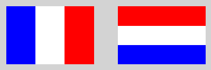

Activité#
Le module turtle propose de nombreuses fonctions pour effectuer nos tracés. On rappelle celles qui nous sont utiles :
Fonction Turtle |
Rôle de la fonction |
|---|---|
from turtle import * |
instruction à écrire pour utiliser le module Turtle |
up() |
lève le crayon |
down() |
baisse le crayon |
forward(n) |
avance la tortue de du nombre n |
left(d) |
tourne la tortue vers la gauche de d degrés |
right(d) |
tourne la tortue vers la droite de d degrés |
goto(x,y) |
déplace la tortue au point de coordonnées (x;y) |
circle(r) |
dessine un cercle de rayon r |
width(e) |
définit la grosseur du trait |
color(“couleur”) |
définit la couleur du trait et remplissage |
bgcolor(“couleur”) |
définit la couleur de fond |
hideturtle() |
cache la tortue |
showturtle() |
montre la tortue |
reset() |
efface tout le dessin |
Les fonctions forward et left ont besoin d’une valeur écrite entre parenthèses pour être correctement exécutées par Python. On dit que ces fonctions utilisent un paramètre.
Exemple
left(90)
forward(100)
D’autres fonctions n’ont pas besoin de valeurs pour être exécutées mais les parenthèses sont quand même présentes ! Les fonctions up() et down() qui lève et baisse le crayon sont sans paramètre.
Pour finir, une fonction peut avoir besoin de plusieurs valeurs comme la fonction goto(x,y) où x et y sont 2 paramètres associés aux coordonnées à atteindre.
Présentation#
Certains drapeaux sont constitués de trois rectangles de couleurs différentes. Par exemple, le drapeau français est constitué de 3 rectangles bleu, blanc et rouge. Le drapeau des Pays-Bas est aussi constitué de trois rectangles bleu, blanc et rouge mais disposés horizontalement.

L’objectif est de dessiné ces drapeaux avec le module turtle en respectant l’odre des couleurs et la disposition verticale ou horizontale des rectangles.
Le script Python sera enregistré dans un fichier drapeau.py. On importera le module turtle au début du fichier.
On prend comme dimensions initales de drapeaux une largeur horizontale de 180 et une hauteur verticale de 120. Définir 2 variables
LetHdéfinissant la largeur et la hauteur du drapeau à représenter.Pour faire apparaître clairement les drapeaux, on modifie le fond d’écran avec la couleur lightgray . Ajouter l’appel de la fonction qui modifie la couleur du fond d’écran et vérifier qu’il s’applique.
Le tracé d’un rectangle se réalise avec une boucle
for.Écrire le code pour tracer un rectangle de largeur
Let de hauteurH.Ajouter les instructions du module
turtlepour mettre en couleur (de votre choix) le rectangle.
Créer des drapeaux avec turtle#
Pour créer un drapeau de trois couleurs, il faut tracer 3 rectangles de couleur différente qui s’alignent correctement et dans le bons sens. Cela suppose:
un positionnement correct du rectangle
des dimensions pour chaque rectangle
une disposition verticale ou horizontale
une couleur pour chaque rectangle
Pour tracer nos drapeaux, nous allons créer nos fonctions. Python permet de créer ses propres fonctions. La syntaxe est la suivante:
def nom_fonction(paramètre_1,paramètre_2,...):
instructions à exécuter
Nous devons déplacer la tortue pour effectuer les tracés. Pendant le déplacement, la tortue n’écrit pas. Une fois arrivée, elle doit pouvoir écrire.
Compléter dans votre script, le code de la fonction
deplacerqui prend en paramètre les coordonnéesxetyà atteindre. On donne la première ligne.def deplacer(x,y):
La construction d’un rectangle de couleur est utilisé à plusieurs reprises pour créer un drapeau. L’écriture d’une fonction qui construit ce rectangle s’impose. La fonction
rectanglea 5 paramètres qui sont:xetypour les coordonnées du sommet gauche en bas du rectangle;lethpour la largeur et la hauteur du rectangle;couleurpour la couleur de remplissage et de tracé du rectangle.
Écrire la déclaration de la fonction avec ces 5 paramètres.
Compléter le corps de la fonction en y insérant le code précédent pour tracer un rectangle.
Ajouter le positionnement du sommet bas gauche du rectangle.
Effectuer l’appel
rectangle(50,0,100,150,"blue") et exécuter le code pour vérifier la construction d'un rectangle bleu.
Nous allons écrire le code pour tracer les drapeaux de la Frace et des Pays-Bas qui ont les mêmes couleurs. Nous laisserons une distance de 50 entre chaque drapeau.
Écrire le code pour créer le drapeau de la France.
Écrire le code pour créer le drapeau des Pays-Bas.
Modifier les valeurs de
LetHet vérifier que vos drapeaux restent bien tracés. Dans le cas contraire, apporter les modifications nécessaires.
{kind=link}
{kind=link}